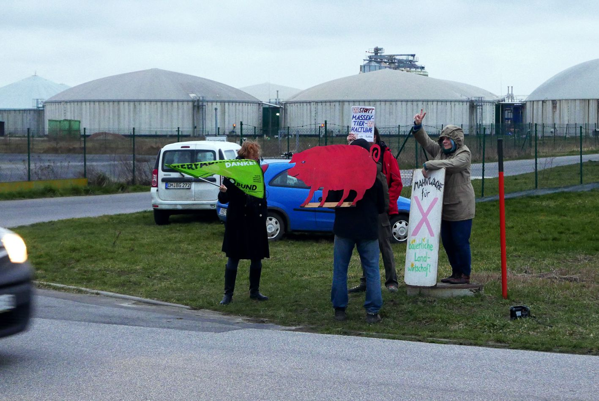
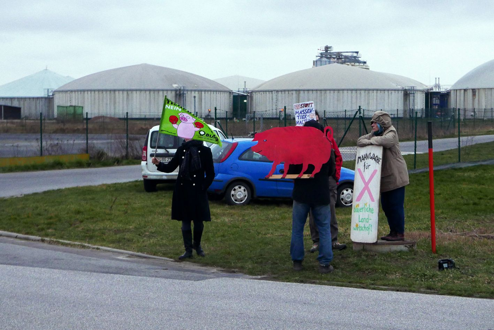

Rosamontag - Mahnwache vor der Terra-Grundwerte-Fabrik

Zeit für neue Wege?
BBL Bernsau Brockdorff gehört seit vielen Jahren zu den bundesweit führenden und hervorragend vernetzten Kanzleien mit dem alleinigen Fokus auf Sondersituationen - Restrukturierung, Sanierung und Insolvenz.Die LFD Holding mit Sitz in Genthin (Sachsen-Anhalt), Deutschlands größter Ferkelzuchtbetrieb, hat ihre Investorenrunde (LFD Holding GmbH, Doppelnützige Treuhand, 350 AN, 100 Mio. EUR Umsatz, 12 Einzelbetriebe, Beratung) erfolgreich abgeschlossen. Christian Graf Brockdorff von der überörtlichen Sozietät BBL&Partner freut sich: „Mit der Terra Grundwerte AG haben wir einen Investor gefunden, der vom Kurs und der strategischen Ausrichtung der LFD Holding überzeugt ist.
Die Terra Grundwerte AG versteht sich als Werteentwickler durch Investment-Beteiligungen mit finanzieller als auch operativer Verantwortung. Die Gesellschaft bezweckt den Erwerb, das Halten, die Verwaltung, das Vermieten und das Veräussern von Liegenschaften aller Art sowie die Verwaltung von Beteiligungen als auch die Verwaltung eigenen Vermögens. Aktienkapital: CHF 100'000.00.
Vinkulierung: Die Übertragbarkeit der Namenaktien ist nach Massgabe der Statuten beschränkt. Gemäss Gründererklärung vom 20.11.2019 untersteht die Gesellschaft keiner ordentlichen Revision und verzichtet auf eine eingeschränkte Revision.
Eingetragene Personen: Strehl, Thomas-Andreas Martin, deutscher Staatsangehöriger, in Alpnach, einziges Mitglied des Verwaltungsrates, mit Einzelunterschrift.
Revision: Verzicht auf RevisionFronleichnam ist in MV kein Feiertag, schon Luther hatte das "allerschädlichste Jahresfest" als Gotteslästerung empfunden - also schaun wir mal, was dieser Tag 2020 bringt:
Nach dreijähriger Unterbrechung soll am 11. Juni der zweite Verhandlungstag gegen die Genehmigung der Ferkelfabrik am Tollensetal beginnen.
Ob der aber letztendlich zu einem Abschluss kommt, steht in den Sternen - Vielleicht müssen sich die Anwälte der neuen Grundwerte-AG ja auch noch ein paar Jahre in das komplexe Thema einarbeiten.
Bisher ununterbroche 6 Jahre Mahnwachen an jedem Montag aber werden ehrenamtlich durchgehalten.
MV tut gut - ja, aber wem wohl...
